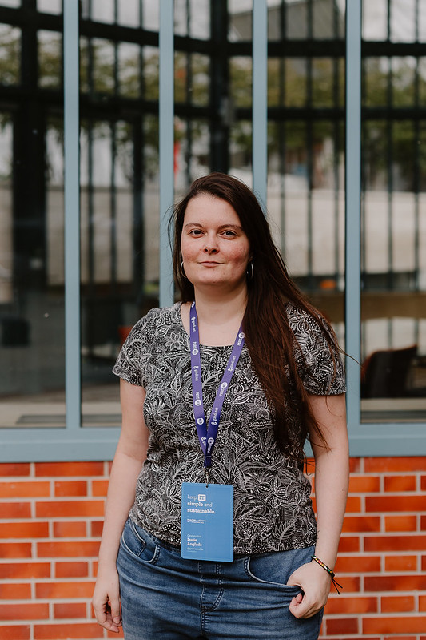
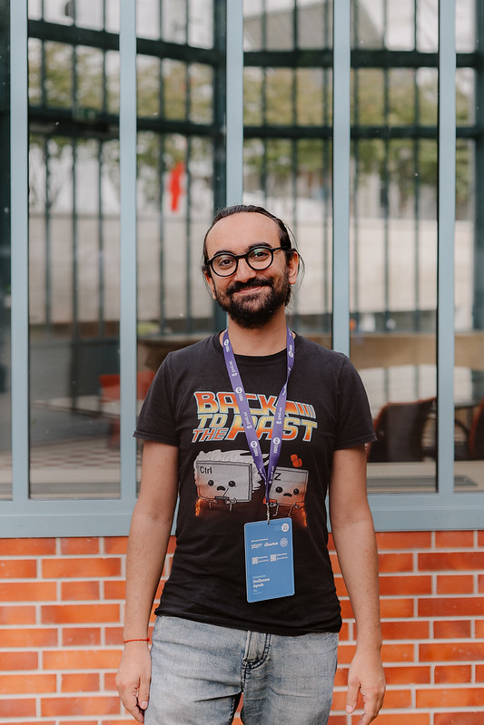

WeasyPrint

A Python library to generate documents.
Creating PDF from HTML and CSS.
A browser putting the output inside a PDF, instead of a window.
 →
→

Guillaume Ayoub & Lucie Anglade
Funding Lessons Learned Panel
FOSDEM 2026


💻 Two French IT engineers.
🐍 Involved in Python community.
📑 Passionate about specification: HTML, CSS, PDF.
A Python library to generate documents.
Creating PDF from HTML and CSS.
A browser putting the output inside a PDF, instead of a window.
→
In October 2020, we launched CourtBouillon with the goal of living from Free Software.